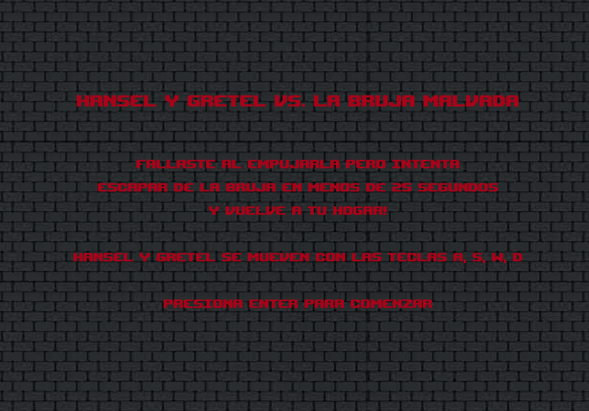
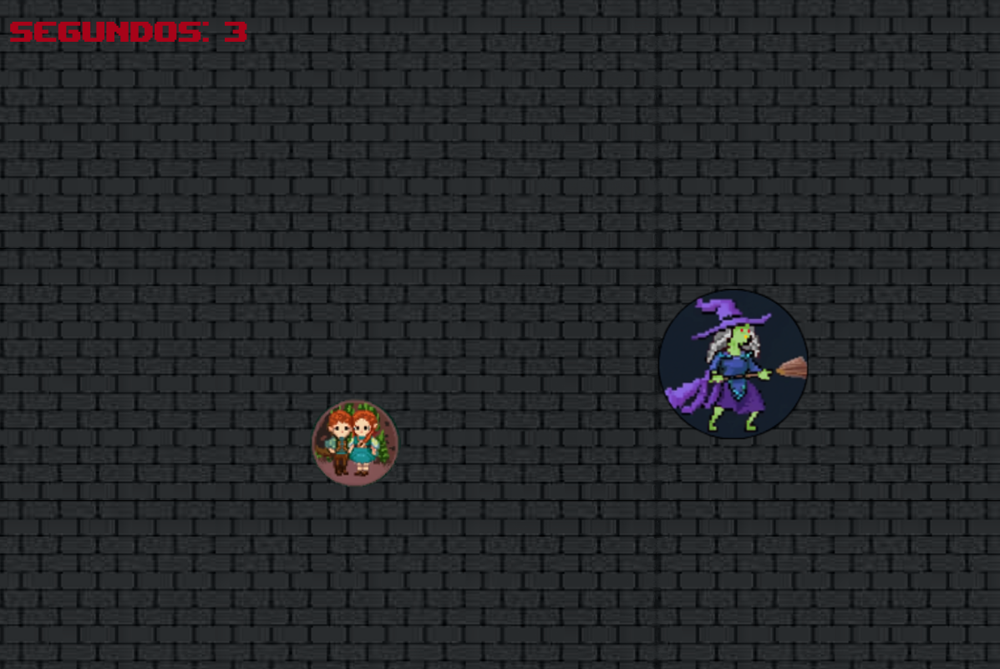

Esta pagina web esta dedicada al Trabajo Práctico Final de la materia Tecnología multimedial 1 del año 2023.
Desarrollador
Mi nombre es Luna De Rito, soy de la comisión 5 de Tobias Albirosa y en este TP Final voy a mostrar mi Aventura Gráfica completa unida con un juego de la misma temática. Si bien se podia elegir trabajar en grupos de a dos, este trabajo se realizó individualmente.
La historia elegida es Hansel y Gretel, escrita por los Hermanos Grimm, a partir de esta creamos una aventura grafica con varios finales y en base a esto un juego, ambos desarrollados en p5.js y Processing.
A continuación una pequeña muestra de lo que fue mi proceso y el resultado del mismo!
Bitácora
Inicios
En el comienzo del Trabajo Practico número 3 tuvimos que elegir de un listado de opciones un cuento clasico para realizar una aventura gráfica al estilo de los viejos cuentos "Elije tu propia aventura", el cual se desarrolló en Processing. La historia debía poseer al menos 12 pantallas y 3 finales diferentes, estar presente el flujo principal del cuento/novela seleccionado/a. Cada pantalla debia tener: Texto narrativo, imagen de la historia y uno o mas zonas de acción para avanzar con la historia. Al llegar a cualquiera de los finales, se debia permitir volver al inicio y comenzar nuevamente, tambien una pantalla de créditos con los datos del alumno y el autor de la obra.
Con estas consignas arme un diagrama para comenzar a visualizar mi aventura gráfica:
En base a esto comence a desarrollar las imágenes con las herramientas proporcionadas, en mi caso elegi utilizar Craiyon. Una página para creación de imagenes con una IA:
A continuación un ejemplo de algunas imagenes que genere para el desarrollo del Trabajo Práctico:
Trabajo Práctico numero 5
En este trabajo práctico tuvimos que crear una aplicación básica que comience a aprovechar el potencial de la programación orientada a objetos, a partir de un conflicto de la Aventura Gráfica realizada, desarrollado con p5.js en Processing.
Al tener mi historia elegida me base en el conflicto de Hansel y Gretel intentando escapar de la bruja malvada.
En esta parte del Trabajo Práctico, ademas de enfocarme en el codigo, tambien me enfoque en la parte de diseño:
Hansel y Gretel
Esta es la imagen que representa al jugador en nuestro juego.
La bruja malvada
Aqui vemos representada a la bruja malvada de la cual deben escapar.
Caldero
Esta es la imagen que se ve para reiniciar el juego.
Complicaciones
Dentro de este TP Final, mi mayor complicación fueron los botones interactivos, los cuales se usan para avanzar, retroceder o reiniciar la historia y, ademas, para llegar al juego. En lugar de cambiar la imagen y el texto cuando se apretaba una vez, hacia que se moviera todo en simultáneo sin las pausas necesarias, no dejando ver correctamente la historia. Gracias a la investigación y las herramientas que me brindaron en clase como Clases, Objetos, Funciones, contadores y demas recursos en p5.js, pude hacer funcionar los "botones" como queria y poder llegar a moverme en mi aventura a gusto y asi, poder llegar al juego desarrollado.
El desarrollo de esta página web fue un desafío en si mismo.
El Juego
Dentro del juego podrán ver las instrucciones y detalles de cómo jugar!
Les presento algunos spoilers de como se ve el juego:
Al final de la pagina podran ver el boton que te llevará al juego!
Sin mas preámbulo, quiero dejarles los resultados de este recorrido por la materia Tecnología multimedial I, donde aprendi a programar en Processing y p5.js:
Gracias por llegar hasta acá!